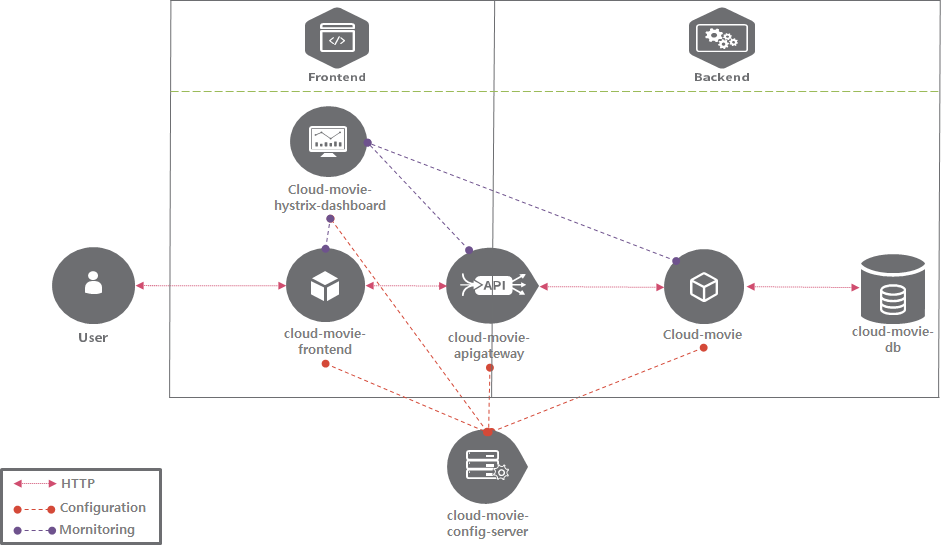
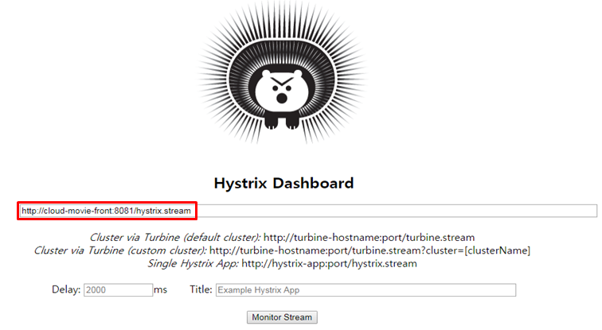
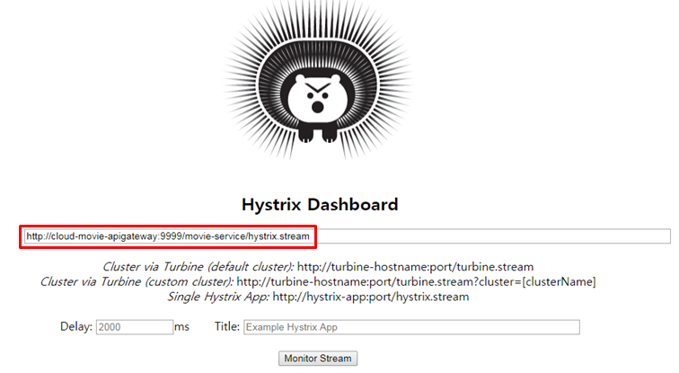
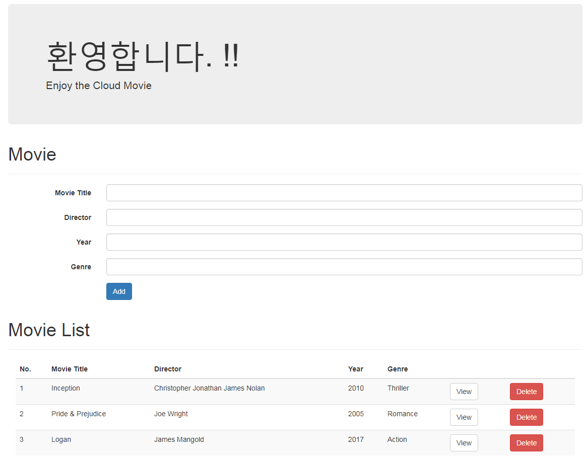
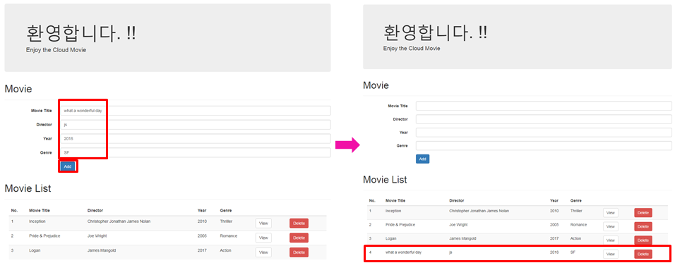
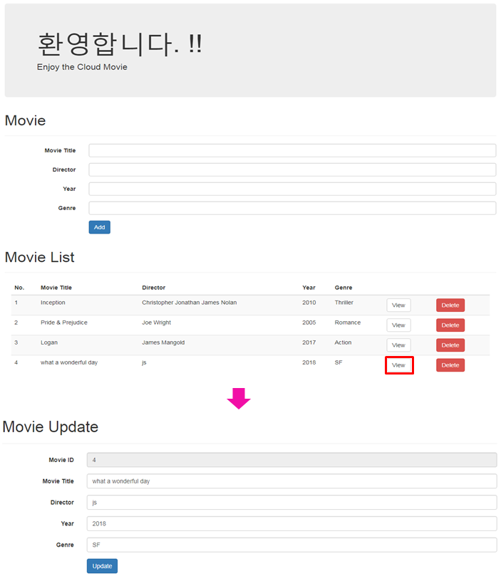
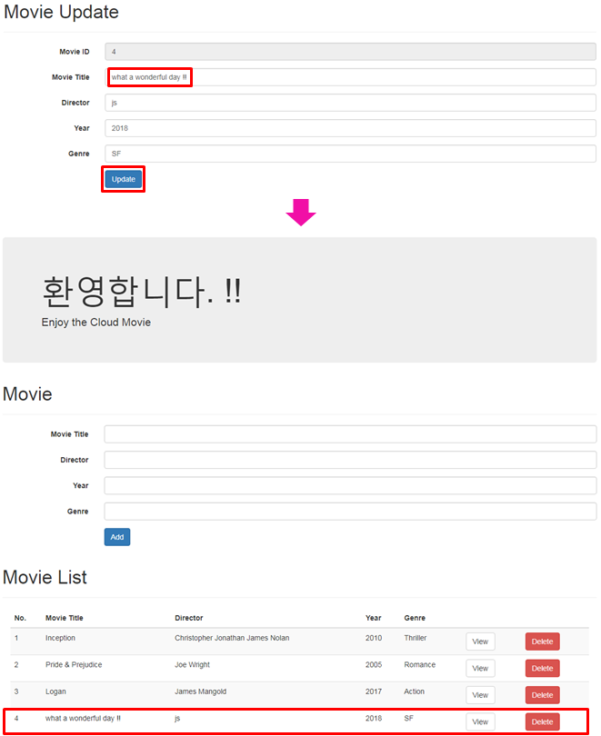
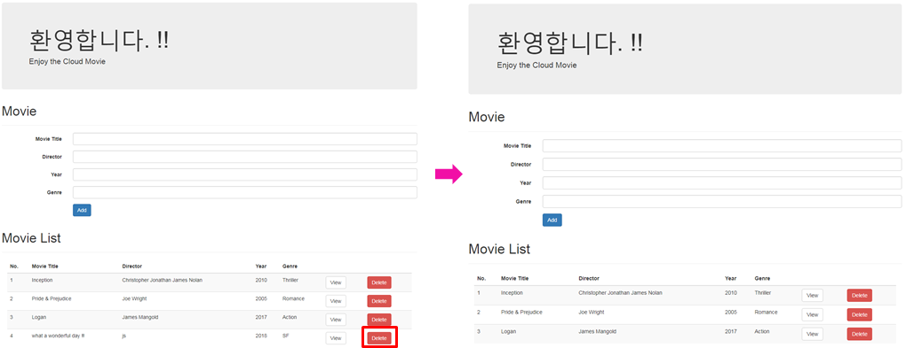
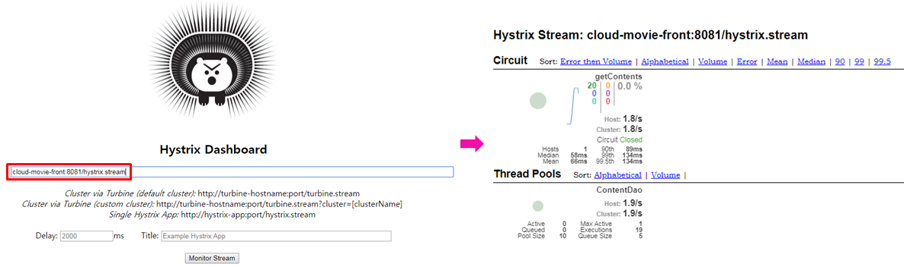

[Docker-User Defined Network 활용(3/3)] Docker User Defined Bridge Network with Spring Cloud
지난 포스팅에서 Docker의 네트워크 기능과 연관된 factors를 경우의 수에 따라 검증을 했습니다.
Docker toolbox를 사용하는 환경(win7)에서 테스트 결과, 아래의 경우에 서비스 간 호출이 성공했습니다.
- 컨테이너의 Port를 노출하고 {docker-machine ip}:{외부 노출 Port}으로 접속한 경우
- 컨테이너를 user defined network에 연결하고 {컨테이너 명}:{컨테이너 내부 port}로 접근한 경우
- 컨테이너를 user defined network에 연결하고 {user defined network ip}:{컨테이너 내부 port}로 접근한 경우
이 중 2번. 컨테이너를 user defined network에 연결하고 {컨테이너 명}:{컨테이너 내부 port}로 접근하는 방법으로 Docker에서 최소 단위의 MSA가 적용된 system을 구성해보겠습니다.
구성할 시스템의 명칭은 cloud-movie 입니다.
About cloud-movie system
cloud-movie system Diagram

- 해당 Diagram에서 User Defined Network는 frontend와 backend로 구분지어 구성했습니다.
- API G/W는 frontend와 backend에 동시에 network binding을 해서 frontend로 부터 API 호출을 가능하게 설정했습니다. 또한, port 노출없이 private network에서 frontend와 backend 사이 proxy, routing을 수행하도록 구성했습니다.
- cloud-movie-front와 cloud-movie-hystrix-dashboard는 브라우저를 통해 접속이 필요한 경우입니다. frontend용 User Defined Network와 연결된 API G/W를 통해 API 서버에 접근할 수 있도록 구성했고 외부로 port를 노출했습니다.
- API 서버는 API G/W를 통한 접속만을 허용하고 외부로 port 노출을 시키지 않는 private network 구성했습니다. 이러한 구성으로 User가 frontend 네트워크 영역의 Application을 통하지 않고 API 서버에 직접 접근하는 것을 차단하고 허용된 기능만 수행하는 방식으로 설계할 수 있습니다.
- config server는 모든 Application과 연계를 위해 stand alone의 형태로 구현했습니다. config server 또한 User Defined Network를 설정하고, 관련있는 Application을 동일한 network에 binding해서 통신을 수행하도록 구성할 수 있습니다.
cloud-movie system Details
구현한 Application은 모두 Spring Boot 1.5.x 기반입니다. 테스트 목적으로 필요한 기능을 구현했습니다.
Application 구동시 config server와 연계하기 위한 설정이 각 Application의 bootstrap.yml에 공통 적용되어 있습니다.
spring:
profiles: default
cloud:
config:
uri: http://localhost:8888
name: cloud-movie-apigateway
---
spring:
profiles: docker
cloud:
config:
uri: http://192.168.99.100:8888
name: cloud-movie-apigateway
아래는 개별 Application에 대한 간략한 설명과 network 관련 설정입니다.
cloud-movie
- Spring Boot로 구현한 backend 서비스입니다.
- cloud-movie-db와 연계해 CRUD 기능을 수행합니다.
- 테스트를 위해 application 구동시 샘플 데이터 초기화를 수행합니다.
- cloud-movie-db와 연계 설정
- cloud-movie-db의 컨테이너 명을 사용해 Host 정보를 사용했습니다.
spring:
datasource:
initialize: true
platform: mariadb
url: jdbc:mariadb://cloud-movie-db:3306/db_example
username: root
password: ThePassword해당 설정에 포함된 민감정보는 실제 사용시 security 적용이 필요한 항목입니다.
cloud-movie-db
- Docker Hub에 배포된 mariadb 공식 이미지의 10.2.13 버전을 사용했습니다.
- docker run 수행시 기본 설정 및 인코딩 방식을 설정합니다.
- 해당 테스트에서 샘플 데이터는 cloud-movie 구동시 초기화하도록 설정했습니다.
실제 Docker 에서 DB 구동시 volume을 설정해 데이터의 연속성을 보장합니다.
cloud-movie-front
- Spring Boot로 구현한 frontend 서비스입니다.
- thymeleaf 템플릿 엔진 사용해 UI를 구성했습니다.
- 외부에서 접근이 필요하므로 port를 노출합니다.
- cloud-movie-apigateway와 연계 설정
- cloud-movie-apigateway의 컨테이너 명을 사용해 Host 정보를 사용했습니다.
rest:
address: http://cloud-movie-apigateway:9999/movie-servicecloud-movie-apigateway
- Netflix OSS의 Zuul을 사용해 apigateway 기능을 구현합니다.
- /movie-service/** 패턴으로 접근시 cloud-movie로 라우팅을 합니다.
- zuul routing 설정
- cloud-movie의 컨테이너 명을 사용해 Host 정보를 사용했습니다.
zuul:
ignoredService: "*"
routes:
movies:
path: /movie-service/**
url: http://cloud-movie:8080
serviceId: cloud-moviecloud-movie-config-server
- Spring Cloud Config를 사용해 config server 기능을 구현했습니다.
- Github의 Repository에 업로드 한 Application들의 설정을 일원화해 관리합니다.
- 해당 테스트에서 config server는 stand alone으로 동작하는 상황을 가정하여 {ip:port}로 접근하도록 구현했습니다.
- 외부에서 접근이 필요하므로 port를 노출합니다.
cloud-movie-hystrix-dashboard
- Netflix OSS의 Hystrix 사용해 Circuit Breaker 기능을 구현했습니다.
- hystrix command의 적용은 cloud-movie-front, cloud-movie 두가지 Application에 적용되어 있습니다.
- 해당 Application은 hystrix dashboard 기능을 별도 Application으로 구현한 것입니다.
- 외부에서 접근이 필요하므로 port를 노출합니다.
- frontend 영역의 Application 모니터링시 {컨테이너 명}:{컨테이너 port}/hystrix.stream으로 접근합니다.

- backend 영역의 Application 모니터링시 cloud-movie-apigateway:9999/{backend 라우팅 패턴}/hystrix.stream으로 접근합니다.

cloud-movie system Deploy
각 어플리케이션을 Dockerfile을 통해 이미지화 합니다.
해당 테스트에서는 docker toolbox로 설치된 docker-machine상의 local 환경에 이미지를 저장해두고 컨테이너 구동시 추가적인 image pull 없이 바로 사용합니다.
별도의 이미지 저장소를 사용하는 경우 docker build, docker tag, docker push의 순서로 수행하시면 됩니다.
자세한 내용은 Docker 시작하기를 참조바랍니다.
cloud-movie system Deploy Spec
| container명 | images | UDN | port | 노출 |
|---|---|---|---|---|
| cloud-movie | cloud-movie:latest | cm-back | 8080 | x |
| cloud-movie-db | mariadb:10.2.13 | cm-back | 3306 | x |
| cloud-movie-front | cloud-movie-front:latest | cm-front | 8081 | o |
| cloud-movie-apigateway | cloud-movie-apigateway:latest | cm-front cm-back |
9999 | x |
| cloud-movie-config-server | cloud-movie-config-server:latest | cm-back | 8888 | o |
| cloud-movie-hystrix-dashboard | cloud-movie-hystrix-dashboard:latest | cm-front | 7979 | o |
외부에서 접근을 하는 기능이 필요한 경우만 port를 노출합니다.
컨테이너 구동
- docker network 명령어로 User Defined Network를 생성합니다. cm-front, cm-back로 명명합니다.
docker network create cm-frontdocker network create cm-back
- docker run 명령어로 컨테이너를 구동합니다. 필요한 환경변수나 port 노출 등의 옵션을 동시에 수행합니다. 구동시 참조하는 우선순위에 따라 수행합니다.
- cloud-movie-config-server
docker run --name cloud-movie-config-server -p 8888:8888 -d cloud-movie-config-server:latest - cloud-movie-db
docker run --name cloud-movie-db --network cm-back -e MYSQL_DATABASE=db_example -e MYSQL_ROOT_PASSWORD=ThePassword -d mariadb:10.2.13 --character-set-server=utf8mb4 --collation-server=utf8mb4_unicode_ci - cloud-movie
docker run --name cloud-movie --network cm-back -e SPRING_PROFILES_ACTIVE=docker -d cloud-movie:latest - cloud-movie-apigateway
docker run --name cloud-movie-apigateway --network cm-back -e SPRING_PROFILES_ACTIVE=docker -d cloud-movie-apigateway:latest
docker network connect cm-front cloud-movie-apigateway - cloud-movie-front
docker run --name cloud-movie-front -p 8081:8081 --network cm-front -e SPRING_PROFILES_ACTIVE=docker -d cloud-movie-front:latest - cloud-movie-hystrix-dashboard
docker run --name cloud-movie-hystrix-dashboard -p 7979:7979 --network cm-front -e SPRING_PROFILES_ACTIVE=docker -d cloud-movie-hystrix-dashboard:latest
- cloud-movie-config-server
cloud-movie system Test
MSA를 적용한 최소 사양의 system이 Docker에서 동작하는 것을 확인합니다.
cloud-movie의 기본 동작들을 확인해 Docker User Defined Network 상에서 컨테이너 명을 이용해 Host 정보를 찾아 동작하는지 확인합니다.
cloud-movie CRUD Test
전체 목록 조회 
Movie List 추가 
Movie List 건별 조회 
Movie List 건별 수정 
Movie List 건별 삭제 
cloud-movie-hystrix-dashboard 모니터링 
Conclusion
Spring cloud와 Docker를 사용해 최소 단위의 MSA가 적용된 system을 구동했습니다. 테스트를 진행한 cloud-movie system의 Backend를 확장해 API 기능을 추가한다면, 용도에 맞게 MicroService를 개발해서 cm-back에 binding 하는 것으로 쉽게 확장이 가능합니다.
컨테이너의 외부 노출 여부 및 컨테이너 간 연계를 고려해 User Defined Network를 적절히 사용하면 API 서버를 private network 상에서 구동시킬 수 있습니다. UI를 통해 의도된 동작 이외에 직접적으로 API 서버나 DB에 접근하는 것을 방지할 수 있습니다.
추가적으로 docker-compose를 사용해서 이미지화 및 컨테이너 구동 관리를 용이하게 할 수 있습니다.